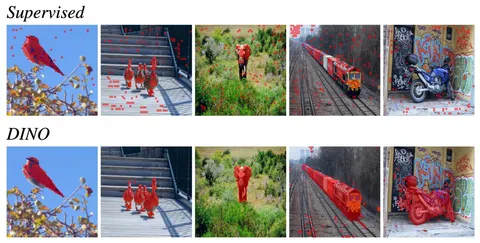

Сегодня начнём разбирать популярные подходы к построению foundation model. Первым двум работам уже много лет, но их основные идеи до сих пор актуальны.
A Simple Framework for Contrastive Learning of Visual Representations (или просто SimCLR)
Эта статья была очень популярна в своё время, хотя её идея совсем проста.
Есть несколько изображений. Каждое из них аугментируют двумя способами, после чего подают на вход модели-эмбеддеру все аугментированные изображения. А дальше — обычный contrastive learning. Эмбеды, соответствующие аугментациям одного и того же изображения, приближают друг к другу, одновременно отдаляя от эмбедов прочих аугментированных изображений. Заранее размечать данные при таком подходе не нужно.
Авторы рассуждают, какие именно рецепты аугментаций лучше подойдут для задачи self-distillation. Общий компонент рецептов — разбиение аугментаций на сильные и слабые: одно аугментированное изображение из пары всегда будет испорчено сильнее, чем другое
DINO: Emerging Properties in Self-Supervised Vision Transformers
В этой статье используется метод self-distillation, для которого лейблы тоже не нужны. Моделью-учителем становится компиляция последних итераций ученика.
Изображение, которое подаётся на вход учителю и ученику, аугментируют по-разному:
Авторы не привязываются к конкретной архитектуре, но отмечают, что лучших результатов удаётся достигнуть с помощью ViT.
После выхода статьи метод DINO эволюционировал: в 2023 году появился DINOv2, в 2025 — DINOv3. Но изменения скорее инженерные: авторы работали над обогащением данных интересными примерами, дедупликацией, а также над ускорением и эффективизацией процесса обучения
В следующей серии поговорим о semi-supervised подходах к построению foundation model.
Разбор подготовил
404 driver not found
